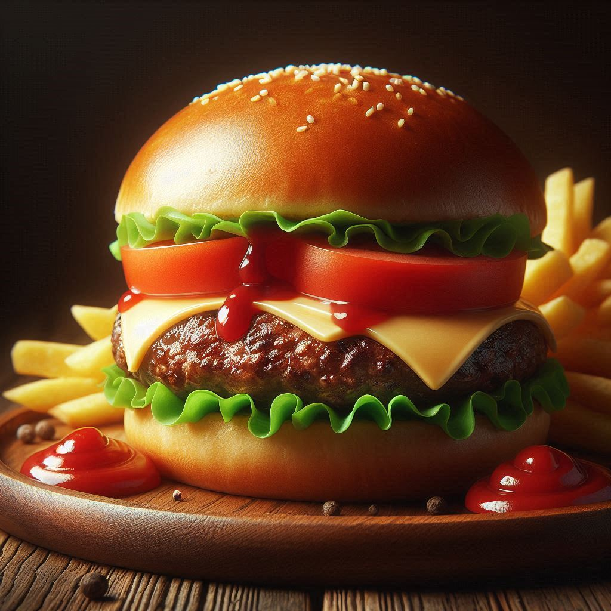

Back To All Recipes
Cheese Burguer Recipe (w/fries)

This classic cheeseburger with fries is the epitome of comfort food. At its heart is a juicy,
perfectly seasoned beef patty, topped with melted cheddar cheese for a rich and creamy layer.
Sandwiched in a lightly toasted, golden bun, the cheeseburger is simple yet irresistible.
Accompanying the burger are crispy, golden fries, freshly prepared and seasoned with a pinch of salt.
The crunchy texture and savory flavor of the fries complement the cheeseburger beautifully, making
every bite a satisfying experience. Together, this timeless duo offers a harmonious balance of
flavors and textures, perfect for enjoying a straightforward and delicious meal. 🍔🍟
Ingredients
- Ground Beef Patty – Juicy and seasoned with salt and pepper.
- Cheddar Cheese – Melted over the patty for creamy flavor.
- Burger Bun – Soft, lightly toasted, and golden.
- Butter or Oil – For toasting the bun (optional).
- Potatoes – Fresh and cut into fries.
- Salt – To season the fries after frying.
- Cooking Oil – For frying the potatoes.
Steps to Prepare
- Prepare the Beef Patty: Season ground beef with salt and pepper. Shape it into patties and cook
on a skillet or grill over medium heat until fully cooked. Melt cheddar cheese on top while the
patty is still warm.
- Toast the Buns: Lightly butter the burger buns and toast them on the skillet or in the oven
for a golden, crisp texture.
- Prepare the Fries: Wash and peel potatoes. Cut them into fries and fry in hot oil until crispy.
Drain on paper towels and season with salt.
- Assemble the Cheeseburger: Place the beef patty with melted cheese on the bottom bun. Add the top
bun to complete the burger.
- Serve: Plate the cheeseburger alongside the fries. Enjoy your classic meal!
Back To All Recipes